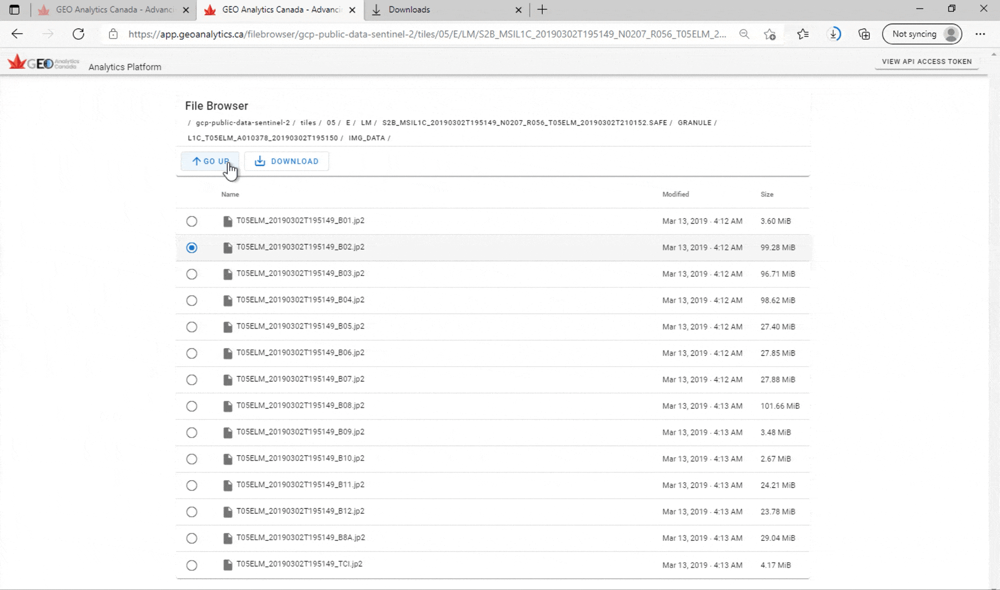

File Browser#
The File Browser enables browsing and downloading of all the data stored on the GEOAnalytics platform for use in external systems. It is a convenient function to explore the datasets available without starting up the JupyterLab or Remote Desktop environment.
You can view and download data from all the Earth Observation data stores, shared data between users of the platform, and you own personal data.
The following folders are available to you:
Private Mounted Buckets: Folders available only if you have GEOAnalytics Platform access.
geoanalytics_<username>_private- A user’s personal network file system where only the logged in user can read or write to their own personal storage directory.
Shared Storage
geoanalytics_user_shared_data- All users can read and write to this location.
You can access the File Browser directly from the GEOAnalytics main dashboard. No additional authentication is required to access the File Browser. Note: It may take the File Browser 15 to 20 seconds to load.
There are three main features available in the File Browser.
1. Browsing through the folders#
You can explore all the folders mentioned above, viewing their subfolders and files. There is variable loading time depending on which folder is being accessed.

2. Downloading files from the folders#
The files within all the folders can be downloaded to your local machine.

3. Going back up the folders path#
To navigate backwards, out of the subfolders, the “GO UP” button exits out of the current directory.

[ ]: